<!--
  Generated template for the Greenline page.

  See http://ionicframework.com/docs/v2/components/#navigation for more info on
  Ionic pages and navigation.
-->
<ion-header>

  <ion-navbar>
    <ion-title>Greenline</ion-title>
  </ion-navbar>

</ion-header>


<ion-content padding>
  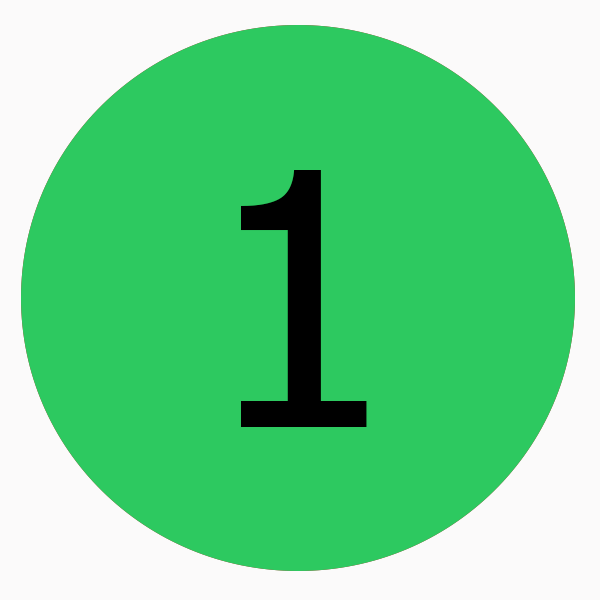
  
  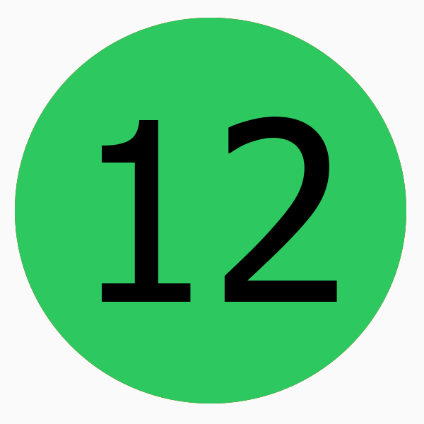<br>

  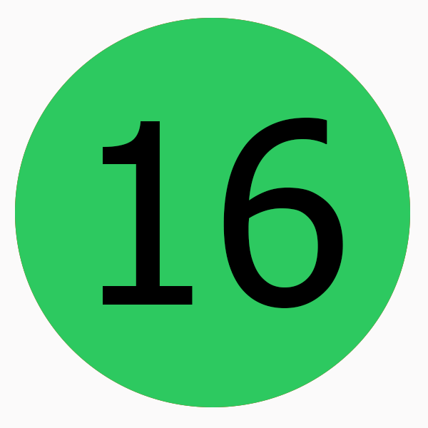
  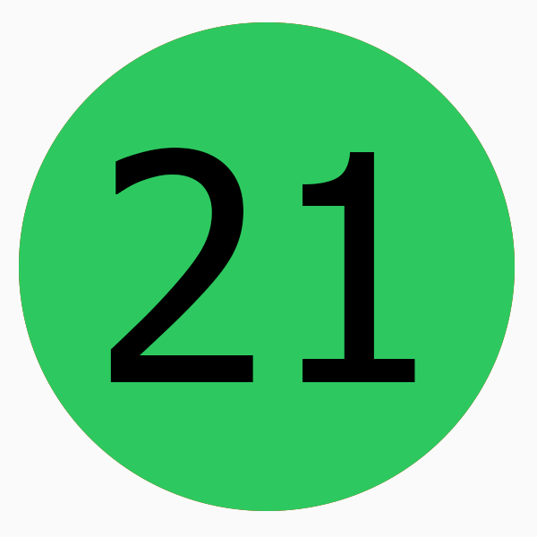
  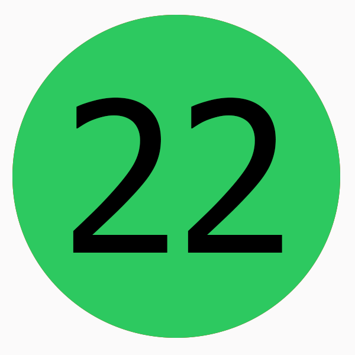<br>

  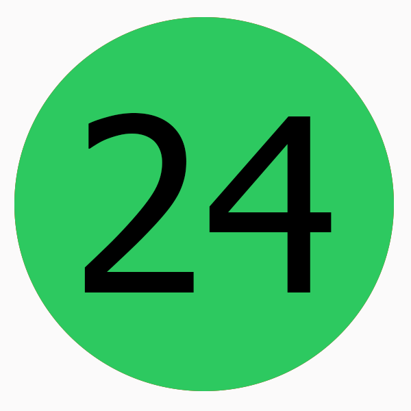
  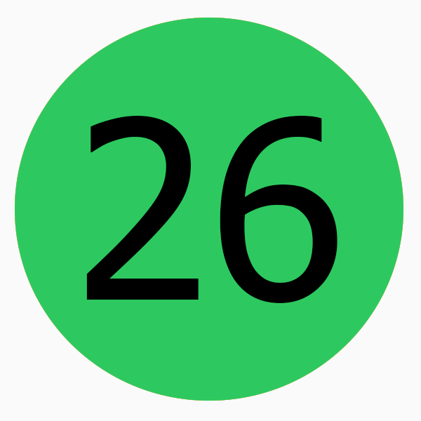
  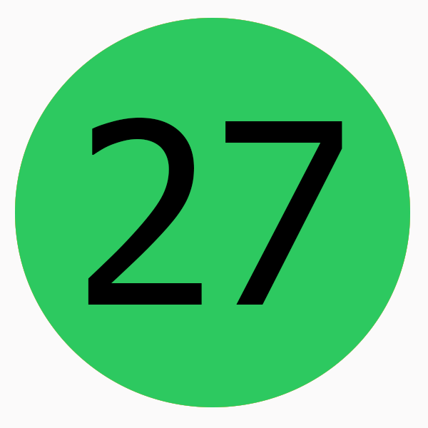<br>

  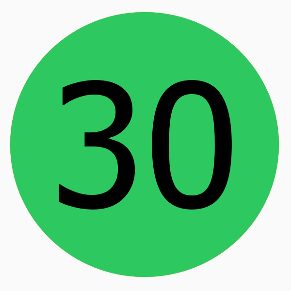
  
  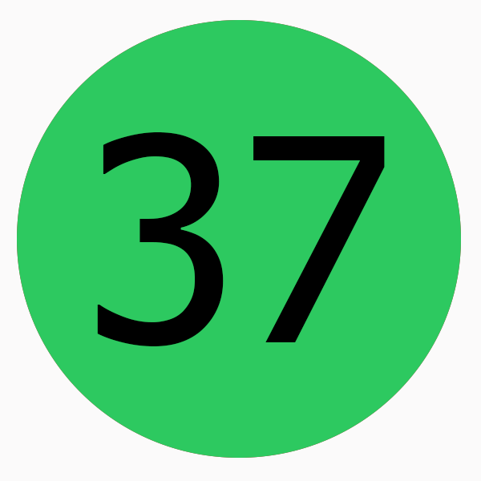<br>

  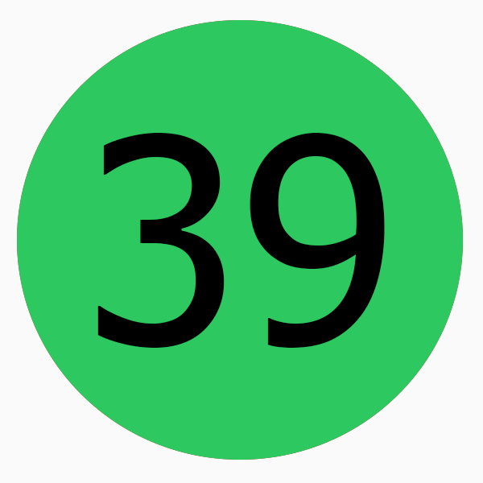
</ion-content>
